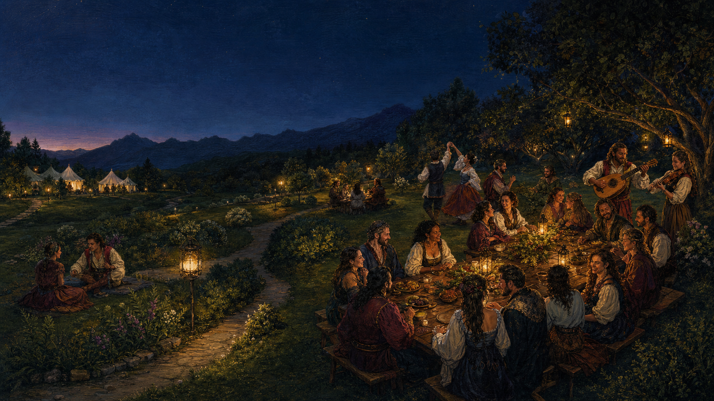

Garden Supper
$99founding / $109 standardSmokehouse supper, music, hosted dance and games, water, and garden access through 11 p.m.

Owner’s scheme · working edition · July 2026
AfterFaire turns the traffic-heavy end of a Faire day into a scarce, hosted garden supper ten miles south—with smokehouse food, music, dance, and an optional place to sleep.
See the decision summary00 / Decision summary
The opening product is a garden salon, not a second festival. Price scarcity, host deliberately, and let approvals—not acreage—set the final cap.
Management gate: do not operate a date without 21 paid or deposit-backed guests.
01 / Business model
Food, lodging, and programming form one prepaid experience. Beverages and small activities may add margin, but the event must work without optimistic bar sales.
Garden Supper
$99founding / $109 standardSmokehouse supper, music, hosted dance and games, water, and garden access through 11 p.m.
Supper & Camp
$179founding / $189 standardThe whole evening plus a primitive party tent plot, morning coffee, and a simple breakfast bite.
Base mix
60%camping guestsAt the early prices, the weighted ticket value is $152 and modeled contribution is $121.94 per guest.
Signature product
Reservation counts make smoked meats and cheeses portionable, memorable, and operationally disciplined. Budget food cost is $18 per guest. The approved food plan determines which smoking, cooling, storage, and service methods are lawful.
02 / Guest journey
03 / Five-acre scheme
Five acres provide separation, atmosphere, and an emergency buffer. They do not create parking or legal occupancy. Exact guest routing stays private until purchase.
04 / Financial case
Eight Saturdays are modeled. Property rent or owner revenue share is excluded and must be added before a final go decision.
| Case | Guests/night | Camp mix | Revenue | Profit | Margin |
|---|---|---|---|---|---|
| Conservative | 20 | 40% | $21,760 | −$1,344 | −6% |
| Base | 26 | 60% | $31,616 | $6,764 | 21% |
| Sellout | 30 | 65% | $37,440 | $11,510 | 31% |
Base-mix sensitivity: eight nights, $152 weighted ticket, $30.06 variable cost/guest, $1,450 nightly fixed, and $7,000 pre-season fixed.
Per guest
Fixed

05 / Market
The question at 6:30
Sell the emotional continuation: keep the company, let traffic pass, and wake beneath the foothills. AfterFaire is for adults already spending on a full Faire day who value ease, belonging, and a distinctive night.
06 / Operations
The site lead owns the manifest and stop-work authority. Cross-train, but never leave parking, food, alcohol, fire watch, or overnight welfare to implication.
Manifest, agency conditions, weather and emergency decisions.
Credentials, parking count, emergency lane, departure flow.
Approved process, temperatures, allergens, handwash, cleanup.
Authorized service, ID, refusal, last call, sober departure.
Welcome, pacing, musicians, dance, quiet-hour transition.
Tent plots, fire separation, quiet hours, morning close.
07 / Approvals and go/no-go
Deposits stay refundable. Public ticket conversion waits until the applicable written approvals, insurance, and operating plans are in hand.
Douglas County land-use / entertainment-event pathway and occupancy.
Larkspur Fire event review, emergency access, tents, cooking and weather.
Retail food/event plan; smokehouse process, storage, cooling and service.
Lawful for-profit service pathway—never assume a nonprofit special-event permit.
Camping, sanitation, potable water, lighting, security and insurance.
Traffic/event permit if required; zero street parking or overflow promise.
Operate only when
Cancel or defer when
08 / Launch calendar
Feasibility. Agency conversations, survey parking, draft site/fire/food plans, price insurance.
Prototype. Test smokehouse menu, service timing, lighting, sound and overnight reset with invited guests.
Demand proof. Launch waitlist; hit 120 qualified leads and deposit thresholds by Feb. 15.
Commit. File required applications, contract key talent, secure equipment and working capital.
Rehearse. Full staff tabletop, evacuation, food, arrival and quiet-hour rehearsals.
Operate selectively. Open only cleared dates; review cash, incidents, ratings and neighbor effects after every night.
The operating north star
That single ratio protects scarce parking while rewarding party bookings, camping mix, and disciplined pricing.
Read the source planVerify current requirements directly with agencies before acting.